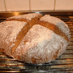

A family favorite. Great with corned beef, or for breakfast.
Ingredients:

2 cups unbleached all purpose flour, plus additional for sprinkling
¼ cup wheat bran (not bran cereal) or toasted wheat germ
1 tsp baking soda
½ tsp salt
½ stick ( ¼ cup) unsalted butter, cold, cut into bits
1 cup golden raisins
1 cup buttermilk or plain yogurt
Instructions:
Preheat oven to 400 degrees and sprinkle a baking sheet lightly with flour.
In a large bowl whisk together flour, bran or wheat germ, baking soda, and salt.
Add butter and toss to coat with flour.
With fingertips rub in butter until mixture resembles coarse meal.
Add raisins and toss until coated.
Add buttermilk or yogurt and stir until dough is moistened evenly.
On a floured surface knead dough 1 minute, sprinkling lightly with additional flour to prevent sticking
(dough should remain soft). Shape dough into a ball.
On prepared baking sheet pat dough out into a 6 inch round.
Sprinkle round with additional flour and
with fingertips spread lightly over round.
With a sharp knife cut a shallow X in top of round.
Bake bread in middle of oven 35 to 45 minutes or until golden brown.
Wrap bread in a kitchen towel
and cook on a rack 1 hours.